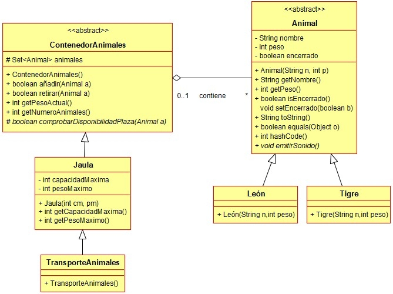

Ejercicio 25 : Programa en el mismo paquete daw.zoo las clases Jaula y TransporteAnimales.

-
Jaula: Clase que representa una jaula que admite una capacidadMáxima de animales, pero sin que se supere un pesoMáximo.
-
Se sobreescribirá el método “comprobarDisponibilidadPlaza” de forma que un animal se podrá añadir si no se supera el número máximo de animales permitido y tampoco se supera el peso máximo permitido.
-
TransporteAnimales: Clase que representa un vehículo especial que solamente puede admitir hasta 6 animales del mismo tipo, sin que se superen los 500kg de peso.
-
Se sobreescribirá el método “comprobarDisponibilidadPlaza” de forma que un animal se podrá añadir si no se supera el número máximo de animales permitido, tampoco se supera el peso máximo permitido y su tipo es el mismo de los demás.